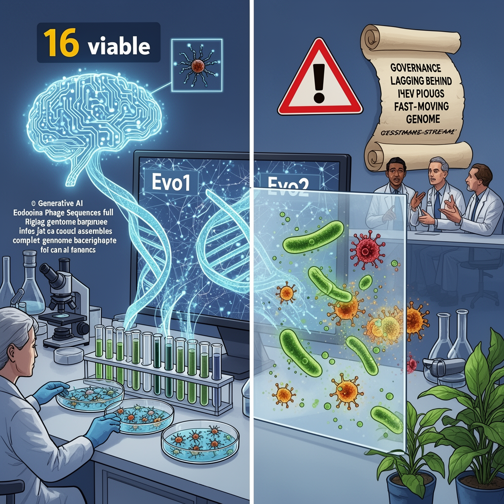

AI Panorama · fly through the DeepSeek V4 Pro edition
This page was written entirely by DeepSeek V4 Pro (DeepSeek), as one of the magazine's editions - eight AI models each wrote their own version of every story from the same frozen sources.
The same story in other editions: GPT-5.6 Terra Claude Sonnet 5 Gemini 3.7 Flash Grok 4.6 GLM 5.3 Qwen 3.8 Max Kimi K2.6
Stanford scientists used AI to design 16 working bacteriophages, raising hopes for new phage therapies and urgent biosafety concerns.

On 6 August 2026, researchers at Stanford University and the Arc Institute reported in Science that they had used two AI systems, called Evo1 and Evo2, to design entire viral genomes from scratch. They then manufactured the designs in a laboratory and found that 16 of them were fully functional viruses. The viruses are bacteriophages — viruses that infect only bacteria, not people. The work is the first time generative AI has produced complete, working viral genomes, and it has opened a sharp debate about promise and risk.
## How the viruses were made
The AI behind the work works on the same basic principle as the large language models that generate text. Instead of learning the statistical patterns of words in written language, Evo1 and Evo2 learned the patterns of genetic sequences. The team generated thousands of possible bacteriophage genomes aimed at one host, the bacterium E. coli, then selected about 300 to build and test in the lab. Only 16 proved viable.
Reports differ on the exact training data. One says the models were trained on genetic codes from viruses, bacteria, plants and people; another says the training set for this work was drawn from roughly two million bacteriophages, with the genetic code of viruses that can infect people, animals or plants deliberately left out. What is clear is that the scientists restricted their experimental work to bacteriophages and did so in a secure laboratory.
One of the 16 viable viruses had a feature that was "evolutionarily distant" from known natural viruses, suggesting the AI had explored a possibility that would have taken natural evolution a very long time to reach, if it ever would.
## Why it matters
The immediate promise is phage therapy. Bacteriophages have been used for decades to treat bacterial infections, especially in places where antibiotics fail. But natural phages are not always effective against resistant strains. In this study, a cocktail of the AI-designed phages overcame antibacterial resistance in some E. coli strains that a comparable cocktail of naturally sourced phages could not. The authors called this a path toward "adaptive and resilient phage therapies" for fast-changing pathogens.
Outside experts called the work a significant milestone. Marc Güell of Pompeu Fabra University said this was a "very significant turning point" because for the first time scientists are beginning to design biology on a computer rather than discovering it in nature. Patrick Cai at the Manchester Institute of Biotechnology said it suggested AI is beginning to learn the design principles of evolution.
## The safety argument
The same edition of Science carried a commentary by Thomas Inglesby and Moritz Hanke of the Johns Hopkins Center for Health Security. They wrote that the findings raise "urgent biosafety and biosecurity questions" and that "the ability to compose viral genomes using generative AI now exists; the governance to safely steer it does not." They singled out one area they said should not be pursued: viruses that infect human, animal or plant cells, because such genomes "might encode new pathogens" that existing countermeasures cannot contain.
Not every expert sees the same level of risk. Jordi García Ojalvo of Pompeu Fabra University noted that the efficiency was extremely low — only 16 viable viruses from the candidates the researchers actually built, and far fewer among all the designs the AI generated — so it is hard to imagine the models automatically producing dangerous genomes out of the box. Tom Ellis of Imperial College London called the genome involved "literally the smallest and easiest genome to make" and said the threat from fully AI-designed genomes is "very overblown" compared with the simpler and more likely route of modifying existing dangerous pathogens. Filippa Lentzos of King's College London argued that the most important point of intervention is not the AI model but the moment DNA is manufactured, and that a layered approach of screening and lab safety rules would make more sense than focusing regulation only on AI.
The organisms involved here are far from anything alive in the usual sense. Bacteriophage genomes are about 5,400 base pairs long; the smallest genome of a living cell is around 500,000 base pairs, and the human genome is about three billion. Moving from a phage to even a simple living cell would be a much larger step. But the experiment has made one thing concrete: a computer can now write genetic code that works when placed inside a cell, and the rules for governing that ability have not yet caught up.
bacteriophagegenome language modelgain-of-function
ai-biologysynthetic-biologybacteriophagesbiosafetygenerative-aiantibiotic-resistance